I am a PSY211 TA, and one of my main responsibilities is grading research reports. I help students learn how to use SPSS to analyse their hypotheses, but I could use some practice doing it in R. In this portfolio, I will use R to create scales, and then I will create a correlation matrix among many of the personality variables, and then I will make a series of heatmaps and network plots to visualize relationships between scales, as well as relationships among items within a scale. It will be fun for me to see relationships among variables at a larger scale, after I have spent so much time reading reports about this datasets.
First, I am going to load the dataset that they use for their projects:
library(haven)
library(ggplot2)
library(rstatix)
library(dplyr)
library(psych)
library(qgraph)
library(visdat)
library(RColorBrewer)
library(corrr)
library(corrplot)
library(ggcorrplot)
library(knitr)
library(kableExtra)
library(GGally) #[Found it here](https://r-graph-gallery.com/correlogram.html)
Data <- read_sav("~/Documents/LabsD4P/Data-Science-for-Psych-Portfolio/OnlinePsychologySurveyData.sav")Next, I do a bunch of data cleaning that isn’t important, but is helpful for me when I am grading my students stuff.
I will produce the correlation matrix of the following variables: self-control, self-esteem, fear of negative evaluation, religiosity, political orientation, child-oriented, conscientiousness, extraversion, satisfaction with life, and group affiliation seeking.
| SC | RSE | FNE | RCI | Children | Consc | Extra | SWL | GAS | PolyO | |
|---|---|---|---|---|---|---|---|---|---|---|
| SC | 1.0000000 | 0.4857467 | -0.3722418 | -0.1065454 | NA | 0.6419319 | 0.1193292 | 0.2247213 | 0.0455769 | -0.0854198 |
| RSE | 0.4857467 | 1.0000000 | -0.4904166 | -0.1190757 | NA | 0.4673775 | 0.3789747 | 0.4307896 | 0.2208653 | -0.0715618 |
| FNE | -0.3722418 | -0.4904166 | 1.0000000 | 0.0864208 | NA | -0.2282450 | -0.2692570 | -0.1234272 | 0.1180394 | 0.0331418 |
| RCI | -0.1065454 | -0.1190757 | 0.0864208 | 1.0000000 | NA | -0.1678402 | 0.1881945 | 0.2859180 | 0.2231984 | 0.4401452 |
| Children | NA | NA | NA | NA | 1 | NA | NA | NA | NA | NA |
| Consc | 0.6419319 | 0.4673775 | -0.2282450 | -0.1678402 | NA | 1.0000000 | 0.1420666 | 0.1456974 | 0.1018936 | -0.0728116 |
| Extra | 0.1193292 | 0.3789747 | -0.2692570 | 0.1881945 | NA | 0.1420666 | 1.0000000 | 0.2831760 | 0.3902377 | 0.1382187 |
| SWL | 0.2247213 | 0.4307896 | -0.1234272 | 0.2859180 | NA | 0.1456974 | 0.2831760 | 1.0000000 | 0.3031402 | 0.2837225 |
| GAS | 0.0455769 | 0.2208653 | 0.1180394 | 0.2231984 | NA | 0.1018936 | 0.3902377 | 0.3031402 | 1.0000000 | 0.0854532 |
| PolyO | -0.0854198 | -0.0715618 | 0.0331418 | 0.4401452 | NA | -0.0728116 | 0.1382187 | 0.2837225 | 0.0854532 | 1.0000000 |
Visualizing the correlation matrix with a heatmap using the vis_cor function:
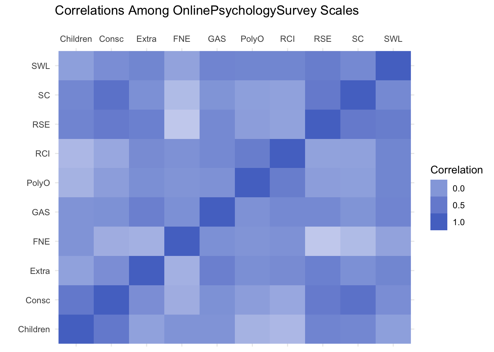
Now improving it:
## Warning: `aes_string()` was deprecated in ggplot2 3.0.0.
## ℹ Please use tidy evaluation idioms with `aes()`.
## ℹ See also `vignette("ggplot2-in-packages")` for more information.
## ℹ The deprecated feature was likely used in the ggcorrplot package.
## Please report the issue at <https://github.com/kassambara/ggcorrplot/issues>.
## This warning is displayed once per session.
## Call `lifecycle::last_lifecycle_warnings()` to see where this warning was
## generated.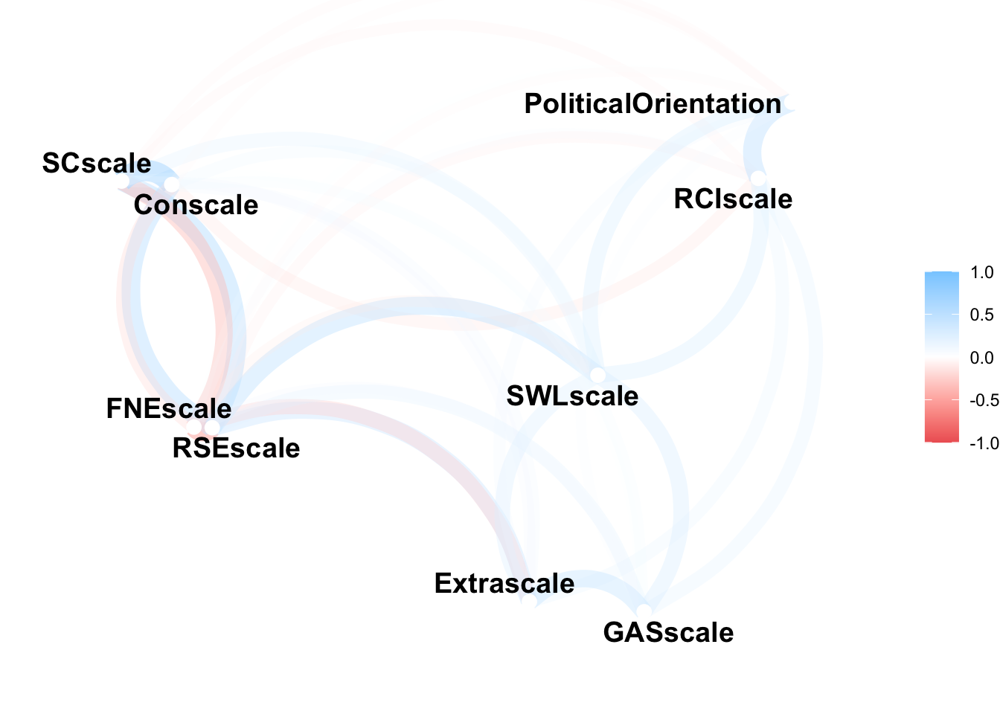
Perhaps a better option than vis_cor is corrplot for making something like a heatmap. Here I play around with the different corrplot options.
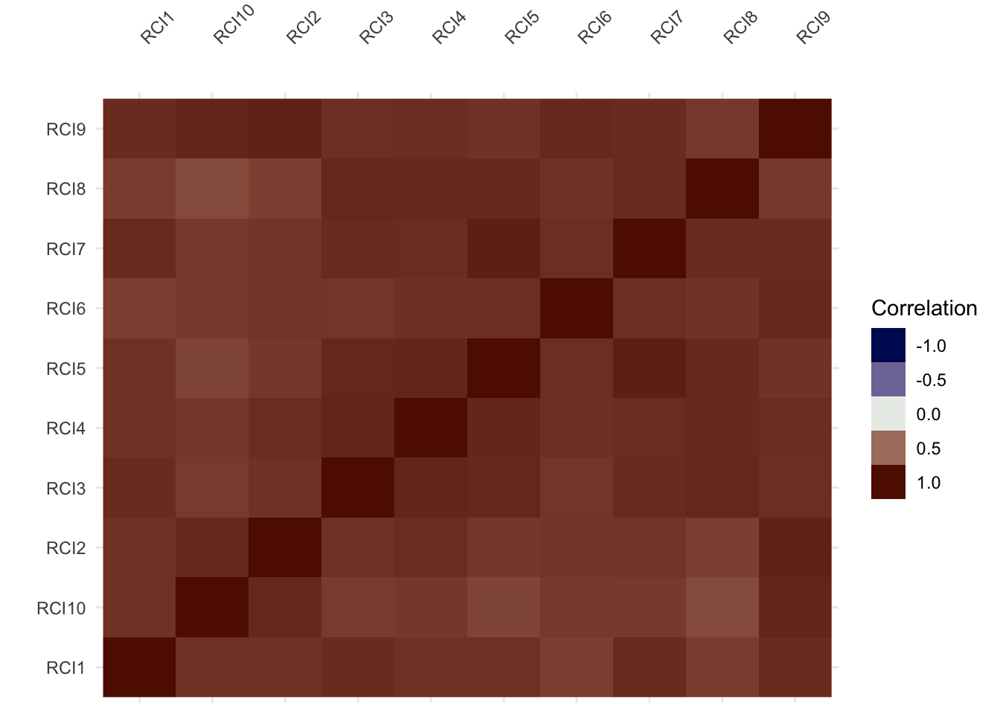
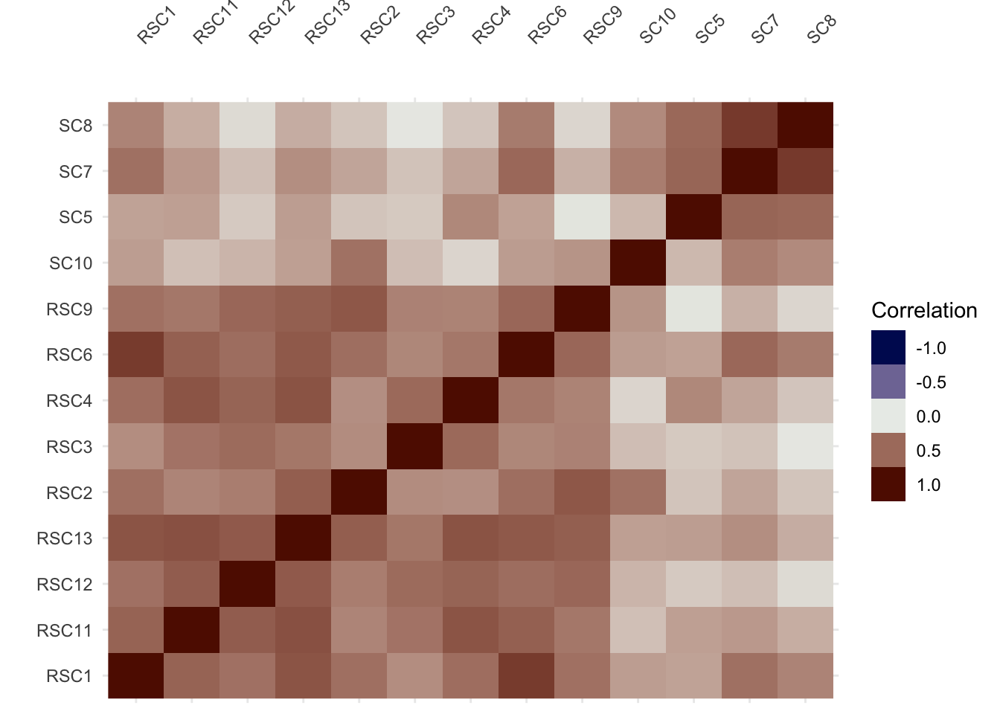
I like this chart, but I’d maybe like it even better wake themed? Ends up being too hard to figure out how to incorporate. I miss ggplot.
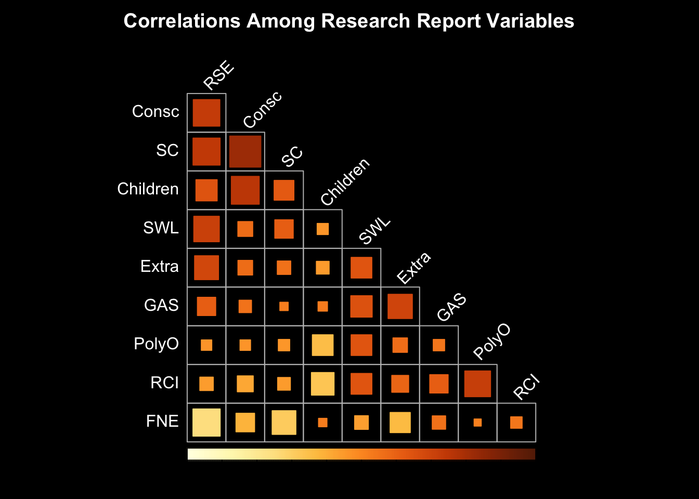
I tried out some other stuff, but it is quite ugly. If interested, see p02.rmd.
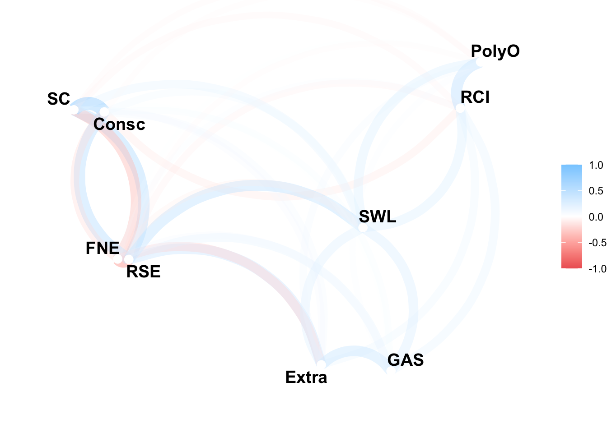
This one is cool but there is way too much going on (totally uninformative).
Still more condensed than I would like, and the dots are too big.
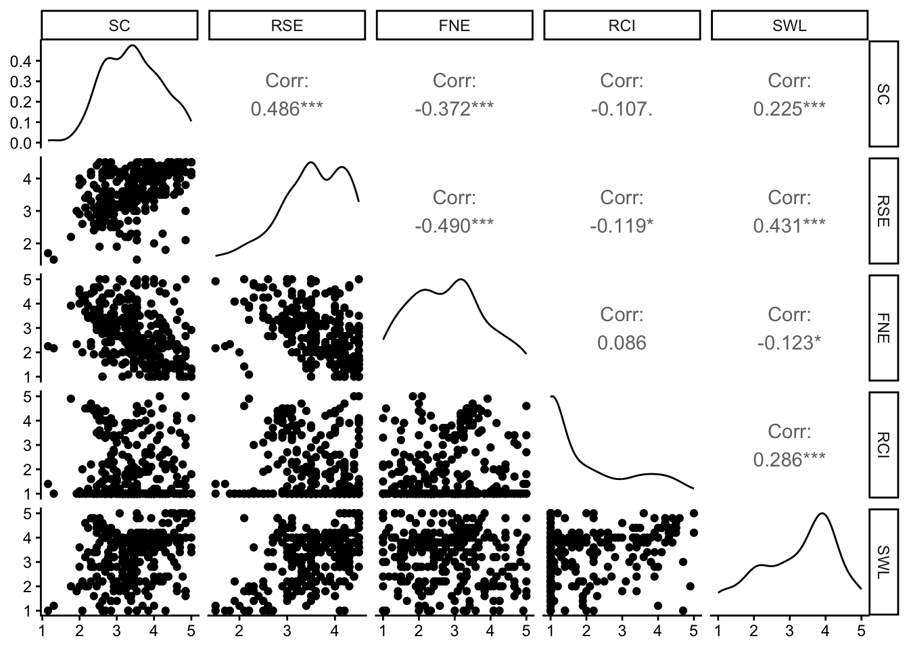
Bonus activities:
The Religiosity Scale was very reliable (α = .97). Here’s the heatmap of its items. Its solid blue, which tracks. Not sure what I was expecting.
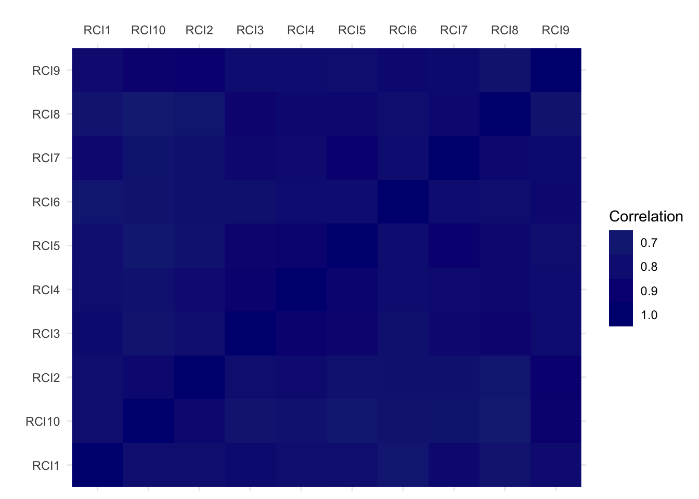
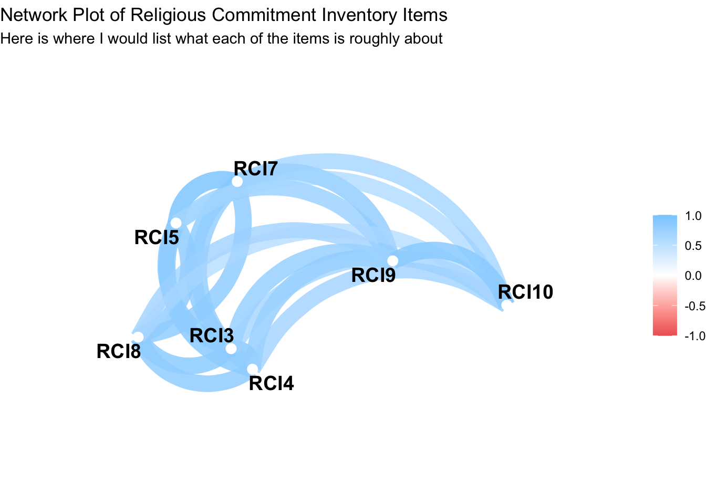
Now for the less reliable scale: self control: still fairly reliable .88
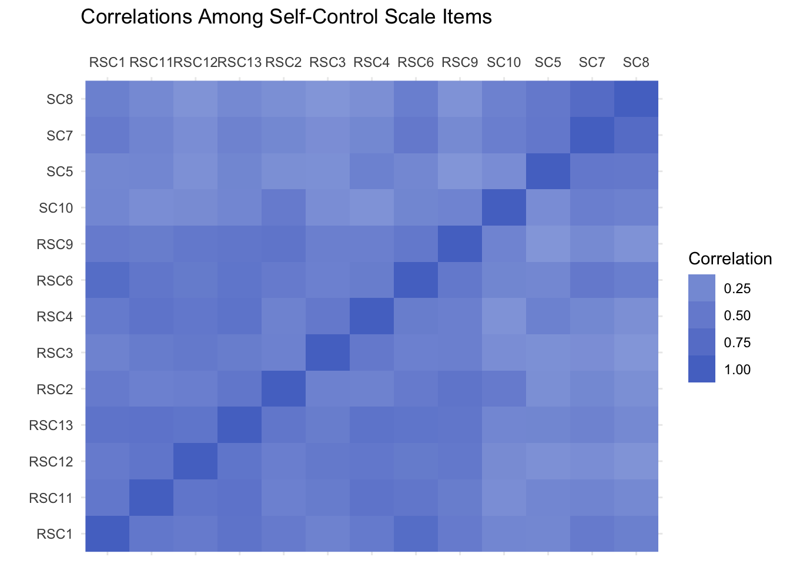
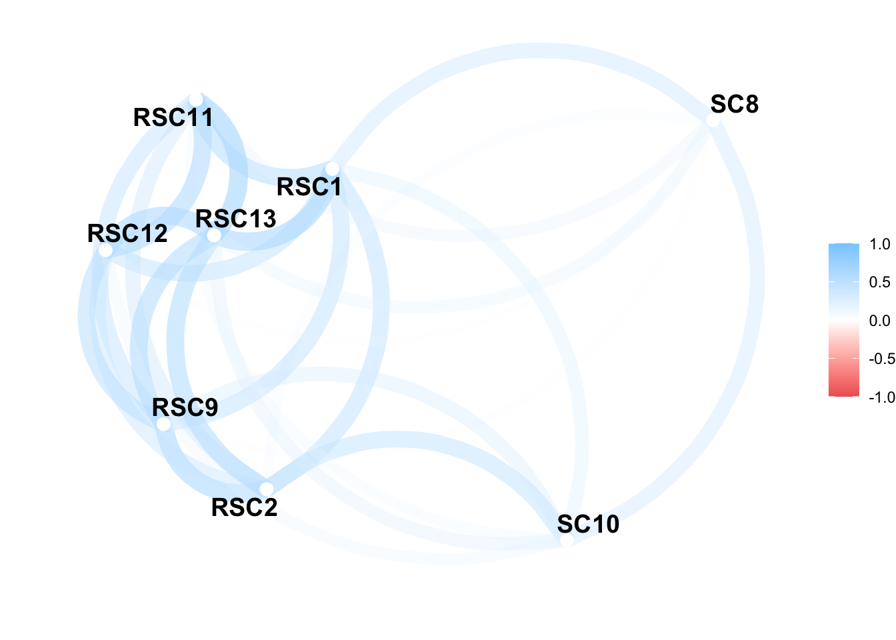
Last thing I would like to do is map fear of negative evaluation and self esteem together, since the first network plot revealed that there were very related.
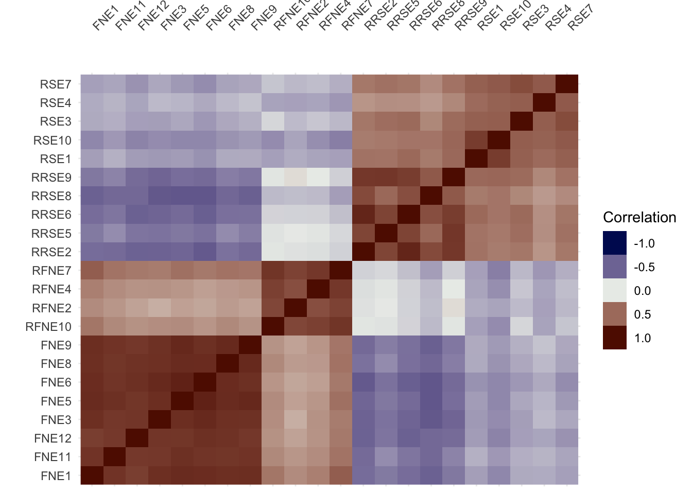
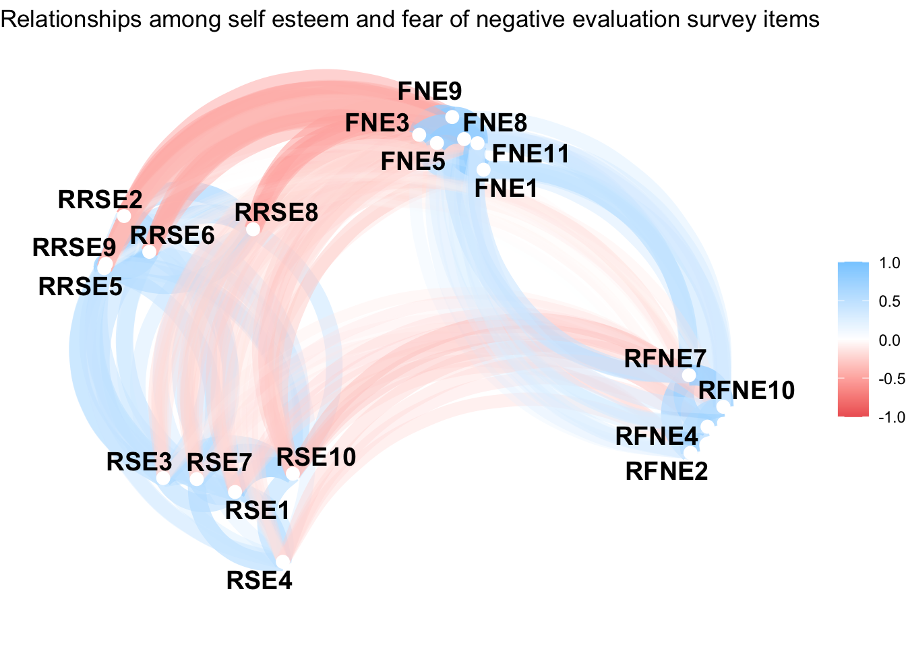